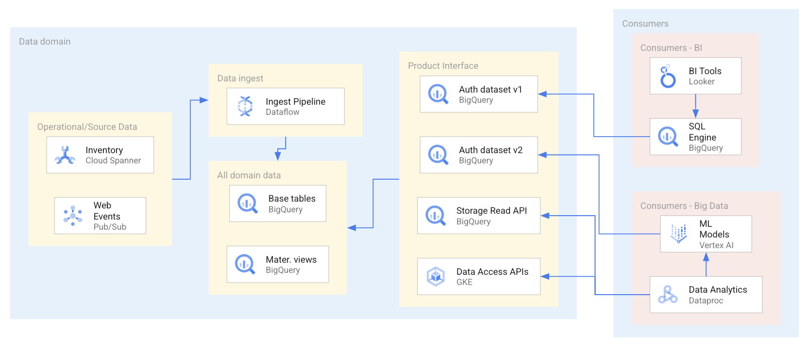

Content Outline
- How data consumers discover products through a central catalog.
- How metadata quality drives trust and product selection.
- How interface contracts guide consumption choices.
- How product documentation supports onboarding and reuse.
- How consumer feedback improves product lifecycle decisions.
- How cross-domain consumption patterns reduce data duplication.
Discovery in a Data Mesh
Data product consumption starts with discoverability. Consumers need a unified entry point to identify relevant products across domains.
A catalog-centric workflow enables search by business meaning, ownership, quality signals, and interface type.
Metadata as a Consumption Enabler
Consumers evaluate candidate products through metadata that explains semantics, freshness, lineage, access requirements, and expected service levels.
- Business definitions and ownership context reduce interpretation errors.
- Operational metadata supports reliability and suitability checks.
- Policy metadata clarifies access and governance constraints.
- Lineage metadata improves traceability and impact analysis.
Interface-Oriented Consumption
Consumers select products through explicit interfaces aligned with their use cases, such as analytical SQL access, streaming pipelines, or API-based retrieval.
Interface clarity helps consumers compare alternatives and choose the least-coupled path for long-term integration.

Product Evaluation and Selection
Multiple products can satisfy similar needs. Selection requires comparing quality, reliability, ownership maturity, and compatibility with target workflows.
- Assess fit against analytical or operational consumption patterns.
- Review SLA expectations and historical reliability signals.
- Validate governance and access feasibility early.
- Prefer products with clear lifecycle and support commitments.
Consumer Integration Patterns
Consumer teams often combine multiple domain products to build cross-domain analytics, reporting, and derived products.
Integration patterns should preserve upstream ownership boundaries while keeping consumer pipelines maintainable.
Feedback and Product Lifecycle Signals
Consumption telemetry and consumer feedback guide product evolution, interface deprecation, and service-level improvements.
- Track usage by interface and consumer segment.
- Collect quality issues and improvement requests systematically.
- Publish change and deprecation notices with clear lead times.
- Use adoption metrics to prioritize platform and product investments.
Key takeaways
- Discoverability requires a catalog, rich metadata, and clear ownership signals.
- Consumers choose products through explicit interface contracts and quality criteria.
- Cross-domain reuse depends on stable interfaces and reliable product documentation.
- Consumer feedback and usage telemetry should drive product evolution decisions.
- Discovery and consumption are core operational capabilities of a mature data mesh.
Web Source
Reference page: https://docs.cloud.google.com/architecture/discover-consume-data-products-data-mesh